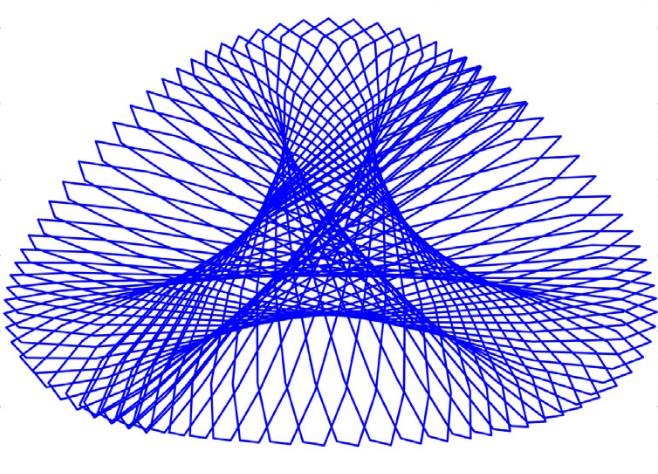

|

|
|
Abstract:
Energy conserving and dissipative algorithm designs in Hamilton’s canonical equations via Petrov-Galerkin time finite element methodology are proposed in this paper that provide new avenues with high-order convergence rate, improved solution accuracy, and controllable numerical dissipation. Lagrange quadratic shape function in time with flexible interpolation points are considered to approximate the solution over a time interval. Instead of specifying the weight functions, two algorithmic parameters, namely, a principal root (ρq∞) and a spurious root (ρp∞), are introduced to formulate a generalized weight function, which enables us to introduce controllable numerical dissipation with respect to displacement and momenta while preserving high-order convergence, and features with improved solution accuracy. A family of third-order accurate time finite element algorithms with controllable dissipation and improved solution accuracy is presented in both the homogeneous and non-homogeneous dynamic problems; and via setting (ρq∞,ρp∞)=(1,1), this third-order family of algorithms directly leads to a new family of fourth-order accurate non-dissipative algorithms in general homogeneous problems; and the fourth-order accuracy is also preserved in non-homogeneous problems when the third-order time derivative of the external excitation has the order of O(Δtn) (n≤1). Numerical examples are performed to demonstrate the pros/cons for the conserving properties of various schemes in the proposed Petrov–Galerkin time finite element of algorithms.
|

![[PHOTO]](../../images/knight_small.png)